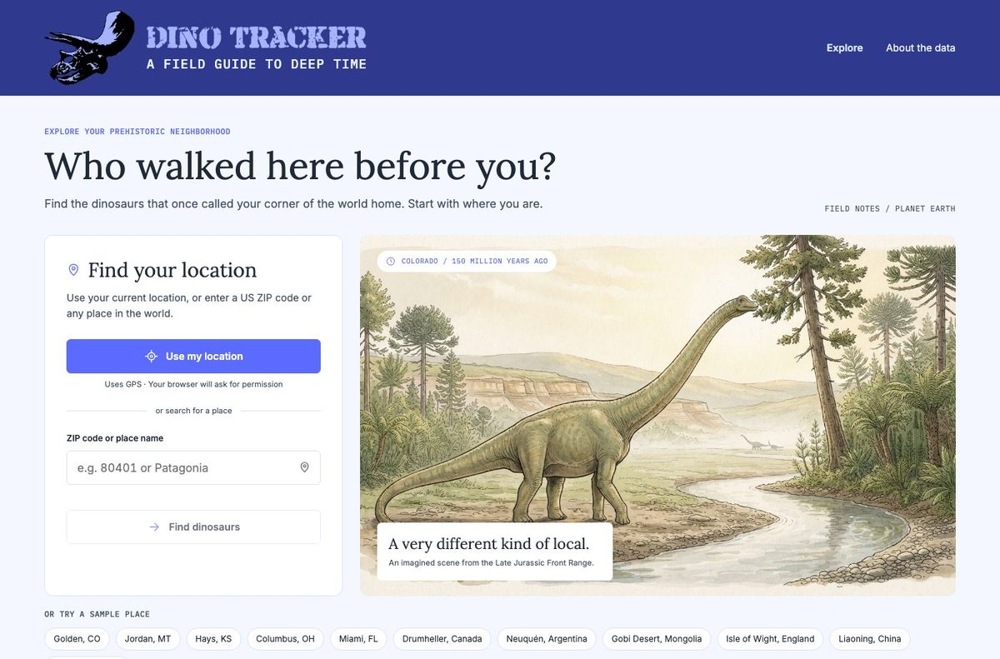
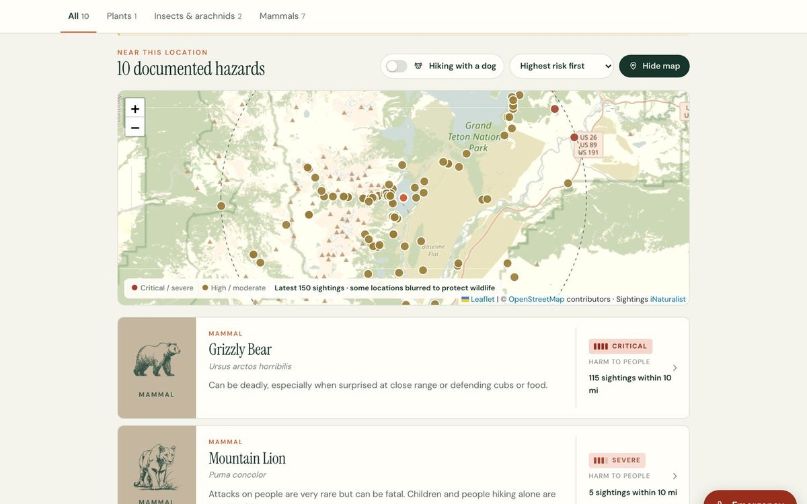
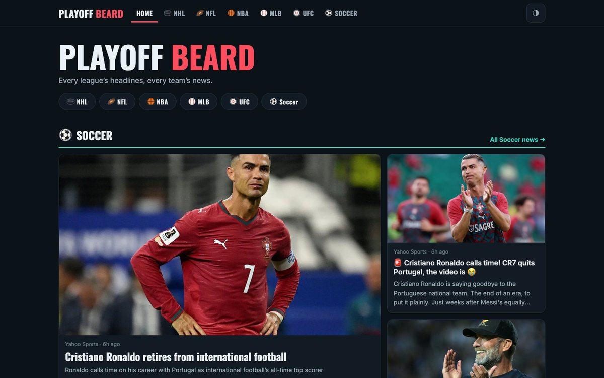
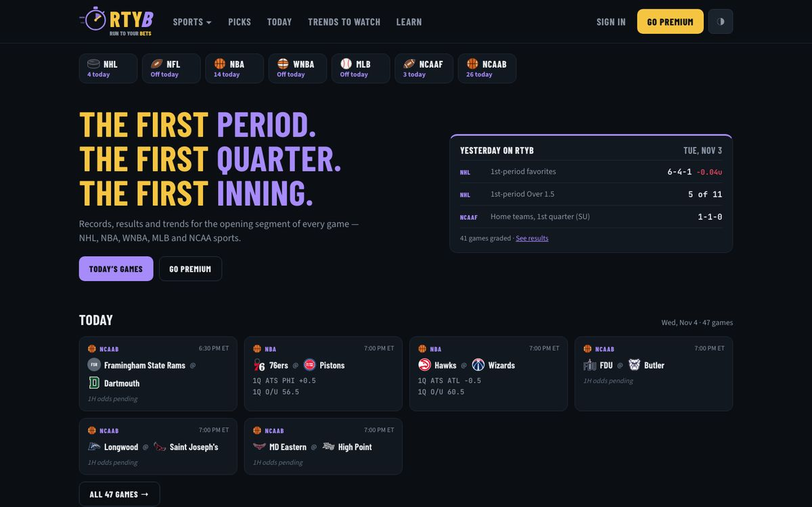
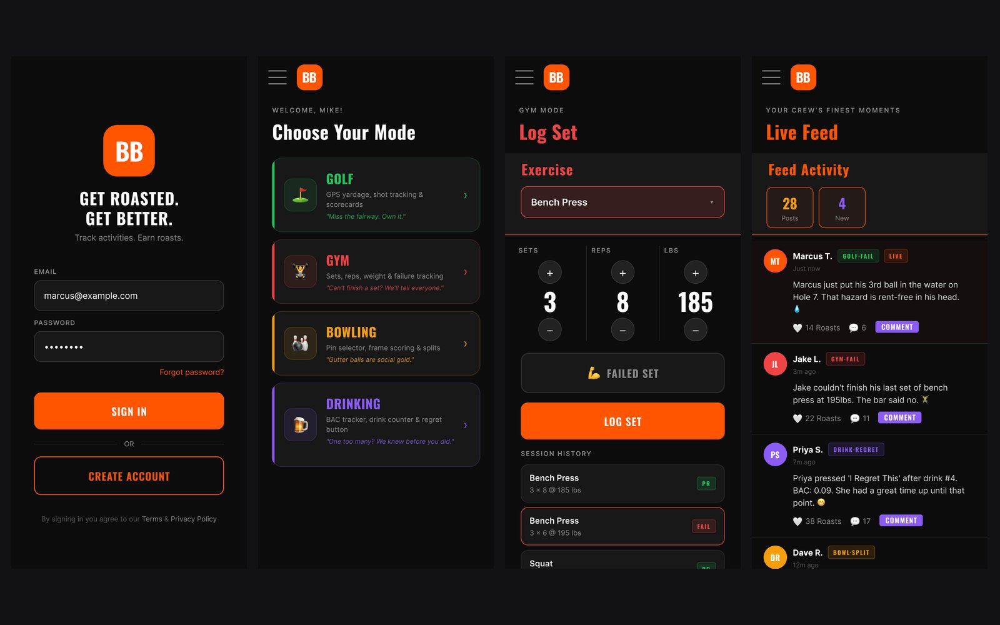
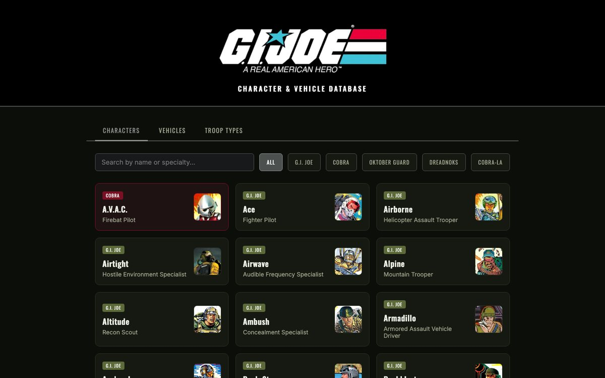

Designed in Figma · Built with Claude Code
Building with AI
The same process, with a shorter loop. Since September I’ve designed and shipped my own products: I own the product and the design, Claude writes the code to my specs, and I review every screen.

Field guide to deep time601 paintings
Dino Tracker
Pick any place on Earth and see the prehistoric life found there, from live fossil records. I art-directed 601 paintings in one house style and added six features after launch.

Safety-first field guideWorks offline
Backyard & Trail
Shows the dangerous plants, wildlife and fungi documented near any trail. I reframed a “scan it” idea around awareness, because a wrong ID can get someone hurt.

News agent185 pages, hourly
Playoff Beard
A sports news site that runs itself: it collects headlines, removes duplicates, tags each story by team and publishes a page for every league and team.

Built with my brotherEvery 10 min
Run to Your Bets
Records, trends and odds for the first period, quarter or inning of every game. My brother runs it with an admin I designed, including AI that reads odds sheets.

Social app14 screens
BB
Friends roast and motivate each other across golf, bowling, the gym and nights out. Miro → Figma Make → Figma → Claude, tested with real users.

Fan database403 entries
G.I. Joe Database
199 characters, 44 troop types and 160 vehicles, browsable by team, with a file card for each, without the clutter of a wiki.